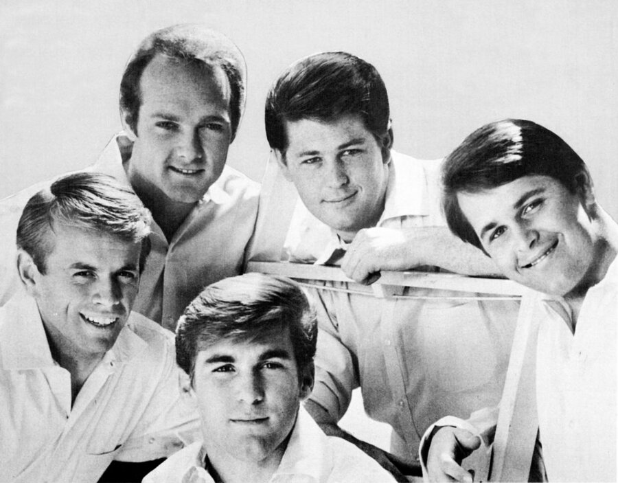

California Girls is The Beach Boys' 1965 summer anthem about girls from every corner of the country.
Capitol released it on July 12, 1965, and it climbed to No. 3 on the Billboard Hot 100.
Its orchestral intro is one of the most recognizable openings of the decade.

Table of Contents
The Story Behind California Girls
Brian Wilson and Mike Love share the writing credit.
Wilson has said the idea arrived during his first LSD experience.
He told the Los Angeles Times in 2007 that he was thinking about the music from cowboy movies.
He sat at the piano and "got these chords going," and a melody followed.
Who Wrote What
Love supplied the lyrics, a tour of girls "from all around this great big world."
They reflect the band's 1964 European tour.
Love has said his contribution was larger than Wilson remembers.
The credit stayed shared, and the two men tell the story differently.
The Orchestral Intro
The opening is the part everyone remembers.
Wilson told an interviewer in 2004 that it was "the greatest piece of music I've ever written."
He has also said the prelude took inspiration from Bach's "Jesu, Joy of Man's Desiring."
The song then drops into a bright, driving groove that sounds nothing like the intro.
Recording in Hollywood
Wilson cut the backing track on April 6, 1965, at Western Studio in Hollywood.
It took 44 takes before he was satisfied.
Vocal overdubs followed on June 4 at Columbia, where the band used a new 8-track recorder.
That let them double-track the lead vocal.
Brian Wilson produced the session himself.
Who Played on the Track
- Mike Love, lead vocal
- Brian Wilson, Carl Wilson, Dennis Wilson, Al Jardine and Bruce Johnston, backing vocals
- Hal Blaine, drums
- Carol Kaye, electric bass
- Leon Russell, piano
- Al De Lory, Hammond B-3 organ
- Howard Roberts, electric guitar
It was Bruce Johnston's first recording with The Beach Boys, though he was not yet an official member.
The band had spent the previous two summers on cars and surf, from Surfin USA to Fun, Fun, Fun.
This track sounded bigger than either of them.
Chart Success and Legacy
The single came out on July 12, 1965, backed with "Let Him Run Wild."
The album Summer Days (And Summer Nights!!) followed.
It peaked at No. 3 in the United States in August 1965.
You can see where it sits among its rivals in our 1965 music year guide.
Wilson was never fully happy with the record.
In 1970 he said, "If I could, I'd re-record that one...We rushed the beat."
By 2010 he was calling it the band's anthem.
| Country / body | Chart or award | Result |
|---|---|---|
| United States | Billboard Hot 100 | No. 3 |
| United Kingdom | UK Singles Chart | No. 26 |
| Canada | RPM | No. 2 |
| Sweden | National chart | No. 6 |
| South Africa | National chart | No. 1 |
| United States | RIAA certification | Platinum |
| United Kingdom | BPI certification | Silver |
| United States | Grammy Hall of Fame | Inducted 2010 |
| Rolling Stone | 500 Greatest Songs (2011) | No. 72 |
From the Beatles to David Lee Roth
The Beatles borrowed from the song for "Back in the U.S.S.R." in 1968.
Paul McCartney told Playboy in 1984 that the parody treated places like Georgia and Ukraine as if they were California.
David Lee Roth covered the song in 1985, and his version also reached No. 3 on the Hot 100.
Carl Wilson and Christopher Cross sang backing vocals on it.
The band's next leap came with Good Vibrations in 1966.
FAQ
Who wrote California Girls by The Beach Boys?
Brian Wilson and Mike Love are credited as the writers.
Brian Wilson produced the recording.
When was California Girls released?
Capitol Records released the single on July 12, 1965.
It was backed with "Let Him Run Wild" and appeared on the album Summer Days (And Summer Nights!!).
How high did the single chart?
It reached No.
3 on the Billboard Hot 100 in August 1965.
It peaked at No.
26 in the United Kingdom.
What inspired the song?
Brian Wilson has said the music came to him during his first LSD experience while he was thinking about cowboy movie scores.
Mike Love's lyrics reflected the band's 1964 European tour.
Who sings lead on California Girls?
Mike Love sings lead.
Brian Wilson, Carl Wilson, Dennis Wilson, Al Jardine and Bruce Johnston provide the backing vocals.
Did David Lee Roth cover California Girls?
Yes.
His 1985 version also reached No.
3 on the Billboard Hot 100, with Carl Wilson and Christopher Cross singing backing vocals.
A cowboy-movie chord idea and 44 takes gave the band one of its biggest records.
Read the full story on the The Beach Boys biography page.
Explore the wider scene on the Garage & Surf Rock genre hub.
Wikipedia's entry on the song covers its recording and chart history in more depth.
Sixty years on, California Girls still sounds like the first day of summer.